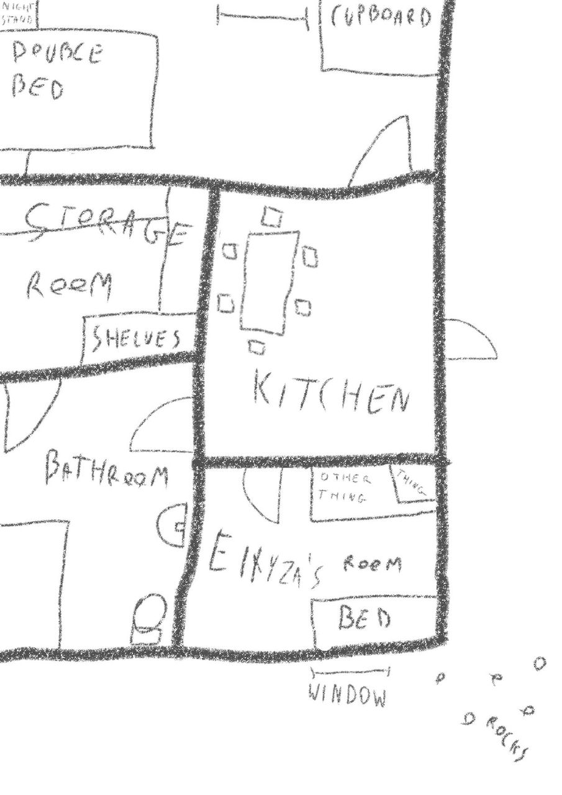
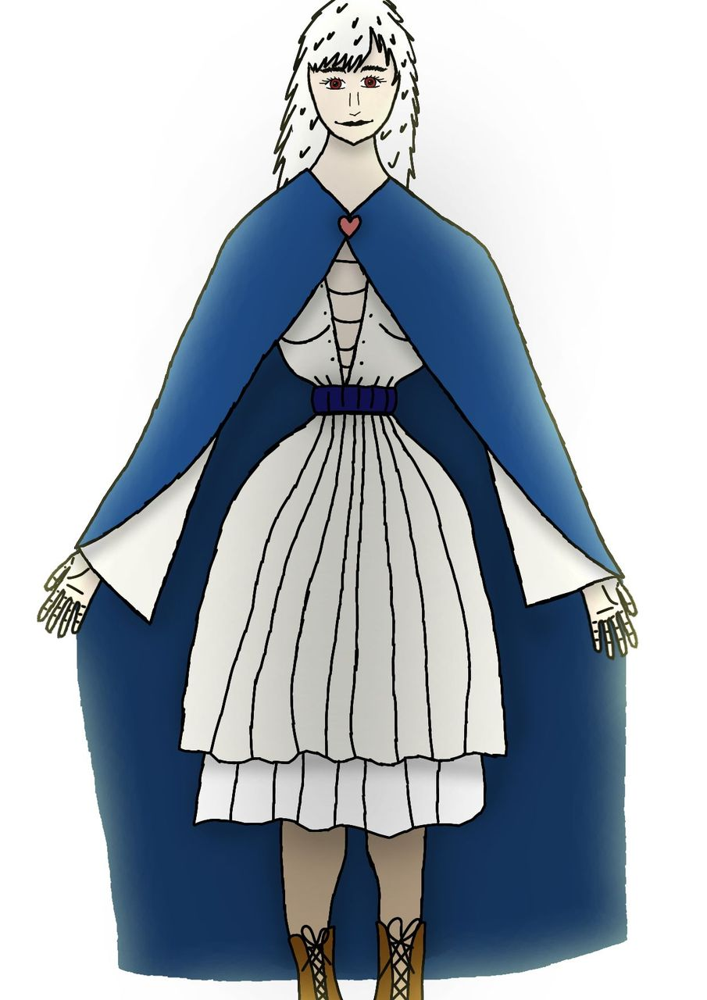

The man looks at me while I'm laying in the depris. - Are you okay? - He asks. - Yeah, I'm alright. - Good. - The moment he says that he collapses on the ground. I get up from the debris and look at the man. I can see him snoring. After that, I hear a sound from my right and when I look that way I can see Imrè being stuck under the debris. I help him remove the debris that's on top of him. - Thanks for that!... What happened? - I don't know, we fell down, and there was a man- That's right, that man! I hurry over to the man to check if he has any injuries. - Who is he? - asks Imrè. - I don't know either. He asked me if I was alright, then he collapsed and now he seems to be sleeping. He's not bleeding anywhere, so he doesn't have any open wounds, but I'm worried he might have internal injuries. I think we should take him to the doctor. - I think we should just leave. Who knows when that knot may return, and the night is coming as well. Carrying him will slow us down, we will just get lost in the dark. I say we just run home. You said he had no wounds, he'll be fine! - He's probably the one who saved our lives from that knot. We can't just leave him here. If you don't want to stay here, why would you leave him here? - What if he's led the knot here in the first place? We don't know him, and we can't know for sure if he was the one who vanish that knot. What if he just massacres everyone in the village when he wakes up? I know that sounds crazy, but I've heard from my dad that there are people who help the knots by leading them to villages. What if he's one of them? - Well, whatever you say, I'm not leaving him here. If you don't want to help, I'll take him to the village alone. I grab the man's hands and start pulling him. After a moment of pause, Imrè speaks again. - You're going in the wrong way. Let me help you. He then lifts the man's legs and puts them on his shoulder. I do the same with his torso, and with Imrè leading the way, we head back to the village. When we get there it's already night time. We sit him down, and Imrè leaves to get the doctor. While he's away, the man slowly gains back his consciousness and with eyes barely open he asks me: - Where am I? - You're in our village. Don't worry, we'll get you doctor soon, you'll be alright. The moment he hears the word doctor, his eyes pop open and he srands up immediately. Just as he does, Imrè comes back with the doctor. - What's going on? Who's hurt? - asks the doctor. - Don't worry, everything's alright - says the man - I'm just a bit tired is all. These kids are worrying too much about me. Sorry for bothering you this late. - Well, alright then. Feel free to come to my office if you're not feeling well though. - Of course! Thank you! - Have a good night! - You too! The man waves at the doctor as he walks away. The moment the doctor is out of sight, the man collapses again. - Oh my god - me and Imrè both cry out. - What now? - asks Imrè - Well, he clearly doesn't want to see the doctor, but we can't leave him here either, he needs a bed to sleep in. I'm gonna take him home and put him in my bed. - Are you out of your mind!? You can't just take a stranger to your home and put him in your own bed! - Not without your help. - What are you talking about, I'm not helping you with putting a stranger in your own bed! Do you even hear what you're saying? - Do you have a better idea? - Oh, plenty! We could leave him here, take him to the doctor's office, or my favourite option, cut him into four pieces and nail each part to the gates of the four biggest cities to make sure he doesn't massacre our village! - ... - ... - Aw, come on! - NO! - It's gonna be okay, I can protect myself. I promise you if he turns out to be dangerous, we can cut him into four pieces and nail him to the gate of the village or whatever. - It's gonna be too late by then! - No it won't. Even if I can't take him out by myself, my dad will rip him into four pieces, so you don't even need to cut him! He is a beast! - I lie to Imrè in hopes of getting him to agree. - Argh! - he let's out a grunt - Okay, whatever! I'm gonna check on you in the morning to see if you're okay, but if you're dead by then, I'm gonna kill you! - Okaaay~ - How do you even want to do it? - Well, I don't want my parents to notice, because they wouldn't let me do that, so here's the plan. I go in through the front door to speak with my parents to get them to go in their room and when I give you the signal, you take him to my window, and I pull him inside. - Maybe there's a good reason your parents wouldn't let you do that... We've been over that though, so let's just do it. We take the man near my home, and hide him in a bush nearby. I go in to talk with my parents. - I'm home! - Here you are! We were getting worried about you! - says my dad - Where were you? - Oh, I was just helping a kid from my class, and time went by so fast that it got dark before I knew it! I'm sorry I made you worry. - It's okay honey. I trust that you know what you're doing, and that you can protect yourself. And you were helping out a kid all this time? I'm so proud to have a child so altruistic! While he says that he hugs me. - I love you dad! - I let out a yawn - But it's getting really late, I think we should go and sleep now. - You're right. - He turns to my mom - let's go to bed sweetie. We can have some fun tonight, it's been so long anyways - they both chuckle while going in their room. Ew. I go to my room and peek out the window. - Oh, we didn't talk about what the signal would be. I'll just imitate a dying giraffe. I make some unholy noises using my mouth and my hands. I notice some movement to my left. Imrè is pulling the man through the grass, hitting his head into the occasional rock, and kicking his head on accident. - What was that noise? - he asks whispering after arriving at my window. - It sounded like a dying giraffe. - Nevermind that, give me his hands! I pull the man in through the window while Imrè is pushing him from below. - Okay, see you tomorrow! - he whispers after we manage to get the man in. - Yeah, see you! I close the window and cover the man with my blanket. I take out some extra sheets that I had in my room, and put them on the ground. I take off my clothes, and I want to put on my sleeping chemise when I realise that the man is laying on it since it was in my bad. I approach my bed, and squeeze my hands under the man looking for my chemise. I finally find it and start carefully pulling it out from under him. It doesn't come. Okay, plan B. I start to roll the man to the farther side of the bed, but he's quite heavy, so I have to push against him with my whole body. I manage to get my chemise with one hand while I'm holding him with my other hand and my chest. I put it on, and finally lay down in my bed. Not long after, I fall asleep. During the night, I have an unusual dream. ...At first, I can't see anything, but I hear a scream of pure agony... ...The kind of scream that would haunt you forever as you can feel the unimaginable agony yourself through that scream... ...Then, I can see a woman is being burned on a bonfire... ...She's the one screaming... ...During this, a man is shouting, trying to get to her but some people won't let him... ...He then stops for a second, seemingly thinking before rushing off with lightning speed... ...It slowly fades to black as the last thing I hear is the woman's screams slowly turning into a gargling sound before dying off entirely... ...I wake up sweating... The sound of the birds chirping helps me calm down. I take a big breath before standing up to open the window. I look at the man in my bed. He's still sleeping. I'll change while he's still asleep. I take my sleeping chemise off, exposing my body. I lean forward to grab, and then put on my daytime chemise. After that, I put on my brown hose fixed to my body with a really dark blue, leather belt; then I put on my yellow-ish white tunic which I tug under the belt; my leather boots and finally my blue cloack held together by a heart shaped button. When I turn around, I see the man has sat up and is well awake on the bed. - Aaaah! - I let out a quiet scream - When did you wake up? - Just this minute, why? And why is your head as red as a tomato? Are you okay? - I-I'm fine... Now that you're awake, who are you? - That's right, how rude of me not to introduce myself! My name is Halál! Good to meet you Miss... - Elłyza... - Miss Elłyza. - What happened yesterday in the forest? - Already with the questions! Well, I believe I saved you! - Yeah, but how? - Swiftly! - What happened to the soul knot? It disappeared just as you appeared! - *They* got sent to Limbo. - Why did you collapse out of nowhere? - I was exhausted. - Why? - Well, I don't see you sending tens of souls to Limbo at a time! Try it, you'd be exhausted too! - But how did you send it-... send *them* to this Limbo? - With just a touch of my finger! - What is this Limbo place anyways? - Well, it's like a waiting room for the souls-... hey, I don't have time for this! Thank you very much for the bed, Miss Elłyza but I'm afraid I must be going now! He starts standing up, but when he reaches an all-fours position, his stomach violently rumbles as he collapses once more. After an awkward pause he looks at me and says this: - Could you perhaps provide me some food before I take my leave, thank you very much! - ... I haven't even said yes yet... I go to the kitchen, and grab some bread before I head back to my room. However while going back, I get stopped in my tracks by my dad. - Good morning honey! Why didn't you wait for us with the breakfast? - Uhh... Well, you see, it's just that, uh, I was so hungry that I couldn't wait anymore! Yeah, that's it...! But why are you up so early? - Well, I wanted to talk to you, but let's have breakfast together first if you're that hungry. - Yeah, sure! - I say while I curse in my head. Now I'm stuck here. I sit down and try to think of an excuse to go to my room. I can't think of any. If I said that I wanted to eat my food in my room, not only would that be rude towards my dad, but also- I hear a thud coming from my room. - What was that? - dad asks. - Uh, well it must've been that thing that was on top of that other thing and it just fell down. I'll go check on it, you can enjoy the breakfast in the meantime! - Uhm, okay honey. I go to my room and I close the door in the blink of an eye. - Here, eat this - I whisper to the man while giving him the bread. - Ahh, bread! The simplest, yet most tasty food- - Honey, what was that sound? Is somebody else in there with you? - No, it's nothing. Just my stomach rumbling, that's how hungry I am! - Then I'll help you put that thing back on top of that other thing. - he says with his hands on the doorknob. - NO! Don't come in, I'm... Changing clothes! - Why are you changing your clothes now? I thought you were putting the thing- - I-It got dirty, so I figured I'd dust it real quick! - ... Okay, I won't come in, but I really think you should eat before dusting your clothes if you're that hungry. - Yeah, okay one second and I'm out! I turn around only to get the last glimpse of Halál crawling out the window before falling down, followed by an "ow". I look out the window and see that Halál fell onto Imrè who was just below my window. - Imrè, good timing! Take him away from here! - Honey, are you coming? - Yes dad, I'm on the way! I go to the kitchen and sit down in front of my dad once more to have breakfast. He's sitting with his back towards the open door. - So, the thing that I wanted to talk about - starts dad, while I can see some movement through the door - is that as you know someone from Untie has died recently called Bęrnabäs. You said you had met him. - Mhm - I say chewing, while I can see Imrè dragging Halál away, bumping his head into rocks on the way. - And the soul knots mean a big danger to us. - Yeah - I can see Imrè dragging him through some mud, with his face down. - So that's why I thought that I would join Untie. I stop chewing... - What!? You're joking, right? - They just lost a man, and there were few of them already. - No, why does that matter? You could die, you can't do this to us! - I know that you're worrying about me, but the village is in danger! If I don't do this, Untie might be overwhelmed and the village gets destroyed. - No, dad, please! Don't do this, you have to stay with us! I don't care about the village, I only care about you! - as I say this, tears start to pour from my eyes. He crouches next to me and puts his hands on my shoulders. - Don't worry about me honey. It's my job to take care of you. I'm doing this for you! He hugs me. I hug him back. I can't stop crying.
 